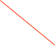

CouchDB


The CouchDB object is found in the catalog under 'misc'. After dragging it into an experiment and opening the user interface, you see the following dialog:
The CouchDB object is a clearing house for access to a couch database. In general, the database should be local. Optionally, the database can be replicated to a remote host.
Two databases are used, one is a status database where the records are continually overwritten and an optional history database. The status database is updated with run state, alarms, and data histograms. You can ‘opt-out’ of writing the histogram records if you need to. The history database is for the ADC values from an ORCA process.
If this object is collected to an experiment object, tt will also collect experiment related records.
Other objects in ORCA can post records to the local database if this object is present in the configuration.

Option to send/remove a record to the data base that contains a message string
The state of the record queues -- use for debugging
URL to remote location that you want to hold a copy of your local database

Start replication process. Can not be stopped once started
A history data base will not be used unless this is checked

Required if your database requires authentication

Default port - do not change unless your database is different
Generally you can use ‘localhost’ unless you have access to write to a remote database
By default this object updates RunControl, process variables, etc. You can option out of histograms

You can optionally disable this object. If selected NOTHING will be written to the database from here (other objects may still write records to the database)